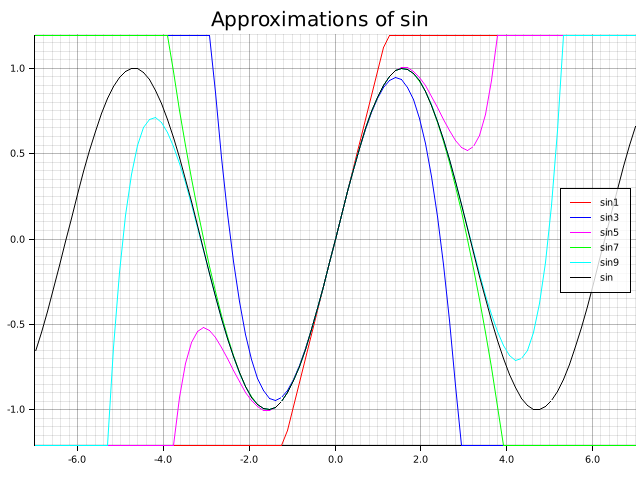
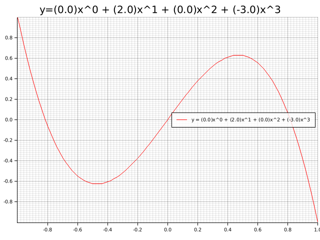

Polynomial basics

EDITED on February 5th, 2022 to fix the call to polynomials
This post is the first of a series of about polynomials. I'm using it as a mean to explore the rust programming language (especially how generic traits relate to algebra) while also learning math subjects.
The code in this post is available on GitHub with MIT license.
Polynomials are a fundamental mathematical entity used for a number of interesting applications including:
- approximation of more complex functions
- interpolation
- error correction codes
- graphical interpolation of curves (splines)
I'm going to work with monovariate polynomials, i.e. polynomials of one variable only
the structure
a polynomial is completely defined by a string of values in a field. These represents the polynomial coefficient from the lowest to the highest grade (let's call it \(n\)); the highest grade coeddicient is supposed to be different from the zero of the field, and all coefficient of degree greather than \(n\) are supposed to be zero.
Main operation needed to define a polynomial are sum and multiplication thus it can be possible to use fields different from usual built-in types (integer and floating point numbers) as long as multiplication and sum are defined.
Thus the data structure will contain a vector of values where sum and multiplication are defined. The vector is needed because we cannot know the length of the coefficient string in advance.
At first I will add only a public constructor: coefficients should be immutable from the user perspective.
#[derive(Debug)] pub struct Poly <T>{ coeff : Vec<T> } impl<T> Poly<T>{ pub fn new(coeff : Vec<T>) -> Poly<T>{ Poly{ coeff:coeff } } }
I can also add a test to this file in order to make sure it is compiled properly. I will import Write in order to use a print debug and check all is ok
#[cfg(test)] mod tests { use super::Poly; #[test] fn creation_and_debug() { let x = Poly::new(vec![1,2,3]); assert_eq!(format!("{:?}", x), "Poly { coeff: [1, 2, 3] }"); } }
the basic operations
I'd like to evaluate a polynomial in a point of its field. In order to do that I need to use the following properties:
- sum is defined
- multiplication is defined
- there is a zero (neutral element of the sum)
- the field values can be copied (i.e. there is a way to safely copy their binary representation)
In order to evaluate the value of a polynomial of degree n I will make use of the following equivalence:
\begin{equation} \sum_{i=0}^{n}c_{i}x^{i} = \lambda (x) : fold(\lambda (a,b) : xa+b, rev(\mathbf{c}),0) \end{equation}
Moreover I'd like to print a textual version of the object in a
human-readable way, maybe not as pretty as formatted \(\LaTeX\). By
implementing the Display trait it would be easier to use the
format functions later.
use std::ops::{Mul, Add}; use std::fmt; #[derive(Debug)] pub struct Poly <T>{ coeff : Vec<T> } // I need to guarantee that a type has a neutral element for sum pub trait Zero{ fn zero() -> Self; } impl<T: Mul<Output = T> + Add<Output = T> + Copy + Zero> Poly<T>{ pub fn new(coeff : Vec<T>) -> Poly<T>{ Poly{ coeff:coeff } } pub fn eval(self : &Poly<T>, x : T) -> T { self.coeff.iter() .rev() .fold(T::zero(), |acc, c| acc * x + *c) } } impl<T: fmt::Debug> fmt::Display for Poly<T> { fn fmt(&self, f: &mut fmt::Formatter<'_>) -> fmt::Result { let result : Vec<String> = self.coeff.iter() .enumerate() .map(|(i, c)| format!("({:?})x^{}",c,i)) .collect(); write!(f, "{}", result.join(" + ")) } } // here are a couple of implementation of general use impl Zero for u32{ fn zero() -> u32 { 0 } } impl Zero for i32{ fn zero() -> i32 { 0 } } impl Zero for f32{ fn zero() -> f32 { 0.0 } }
let's check if the current implementation works
#[test] fn test_evaluation() { let p = Poly::new(vec![1,2,3]); assert_eq!(p.eval(10), 321); } #[test] fn test_formatting() { let x = Poly::new(vec![1,2,3]); assert_eq!(format!("{}", x), "(1)x^0 + (2)x^1 + (3)x^2"); }
#+name poly1-test-display
a polynomial can be a function too
Current implementations of rust expose some traits to pass
functions and lambdas as objects in the std::ops module:
Fnwhen the data structure is borrowed without mutabilityFnMutwhen the data structure is borrowed with mutabilityFnOnewhen the ownership is transferred to the data structure
Today (Feb 2022) to implement these traits we need to use unstable features
#![feature(unboxed_closures)] #![feature(fn_traits)]
The following code creates the needed trait implementations. It can be compiled with
cargo +nightly build
use std::ops::{Fn,FnOnce,FnMut}; impl<T: Mul<Output = T> + Add<Output = T> + Copy + Zero> Fn<(T, )> for Poly<T> { extern "rust-call" fn call(&self, args: (T,)) -> T { self.eval(args.0) } } impl<T: Mul<Output = T> + Add<Output = T> + Copy + Zero> FnMut<(T, )> for Poly<T> { extern "rust-call" fn call_mut(&mut self, args: (T,)) -> T { self.call(args) } } impl<T: Mul<Output = T> + Add<Output = T> + Copy + Zero> FnOnce<(T, )> for Poly<T> { type Output = T; extern "rust-call" fn call_once(self, args: (T,)) -> T { self.call(args) } }
now we can call the polynomial directly as a function. let's add a few test also here:
#[test] fn test_call() { let p = Poly::new(vec![1,2,3]); assert_eq!(p(10), 321); }
let's see how it looks like
I'm going to plot a few polynomials using the popular plotters
library.
use plotters::prelude::*; use poly::poly2::*; fn main() -> Result<(), Box<dyn std::error::Error>> { //polynomial definition let p0 = Poly::new(vec![0.0, 2.0, 0.0, -3.0]); //start of the plot let root = BitMapBackend::new("post002_plot0.png", (640, 480)).into_drawing_area(); root.fill(&WHITE)?; //the polynomial is formatted in the caption let mut chart = ChartBuilder::on(&root) .caption(format!("y={}",p0), ("sans-serif", 25).into_font()) .margin(5) .x_label_area_size(30) .y_label_area_size(30) .build_cartesian_2d(-1f32..1f32, -1f32..1f32)?; chart.configure_mesh().draw()?; //here the polynomial is evaluated //the polynomial is formatted in the plot label chart .draw_series(LineSeries::new( (-50..=50).map(|x| x as f32 / 50.0).map(|x| (x, p0(x))), &RED, ))? .label(format!("y = {}",p0)) .legend(|(x, y)| PathElement::new(vec![(x, y), (x + 20, y)], &RED)); chart .configure_series_labels() .background_style(&WHITE.mix(0.8)) .border_style(&BLACK) .draw()?; Ok(()) }

This code was used to create the post initial image.
It uses the famous Taylor series expansion of the sin
use plotters::prelude::*; use poly::poly2::*; // this evaluates the factorial of n fn fac(n : i32) -> i32{ let mut result = 1; for i in 1..=n{ result = result * i } result } fn main() -> Result<(), Box<dyn std::error::Error>> { //start of the plot let root = BitMapBackend::new("post002_plot1.png", (640, 480)).into_drawing_area(); root.fill(&WHITE)?; //the polynomial is formatted in the caption let mut chart = ChartBuilder::on(&root) .caption("Approximations of sin", ("sans-serif", 25).into_font()) .margin(5) .x_label_area_size(30) .y_label_area_size(30) .build_cartesian_2d(-7f32..7f32, -1.2f32..1.2f32)?; chart.configure_mesh().draw()?; //here the polynomial is evaluated //the polynomial is formatted in the plot label for (deg,color) in [(1,RED),(3,BLUE),(5,MAGENTA),(7,GREEN),(9,CYAN)].iter(){ let coeff : Vec<f32> = (0..=*deg) .map(|n| if n % 2 == 0 { 0.0 } else { let nf = fac(n) as f32; let sign = if ((n - 1) / 2) % 2 == 0 { 1.0 } else { -1.0 } ; sign/nf }) .collect(); let p0 = Poly::new(coeff); chart .draw_series(LineSeries::new( (-50..=50).map(|x| x as f32 * 7.0 / 50.0).map(|x| (x, p0(x))), &color, ))? .label(format!("sin{}",deg)) .legend(|(x, y)| PathElement::new(vec![(x, y), (x + 20, y)], &color.clone())); } chart .draw_series(LineSeries::new( (-50..=50).map(|x| x as f32 * 7.0 / 50.0).map(|x| (x, x.sin())), &BLACK, ))? .label("sin") .legend(|(x, y)| PathElement::new(vec![(x, y), (x + 20, y)], &BLACK)); chart .configure_series_labels() .background_style(&WHITE.mix(0.8)) .border_style(&BLACK) .draw()?; Ok(()) }
conclusions
Polynomials are simple yet powerful structures which can dig into a language syntax and features.
This is just the beginning of this journey: stay tuned for more.